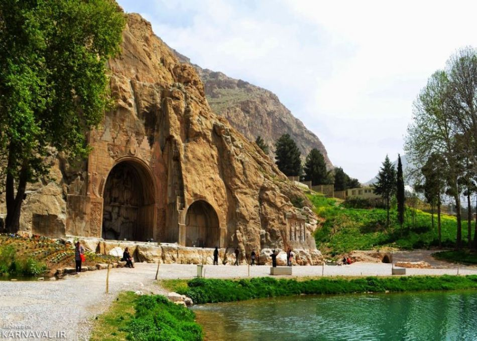
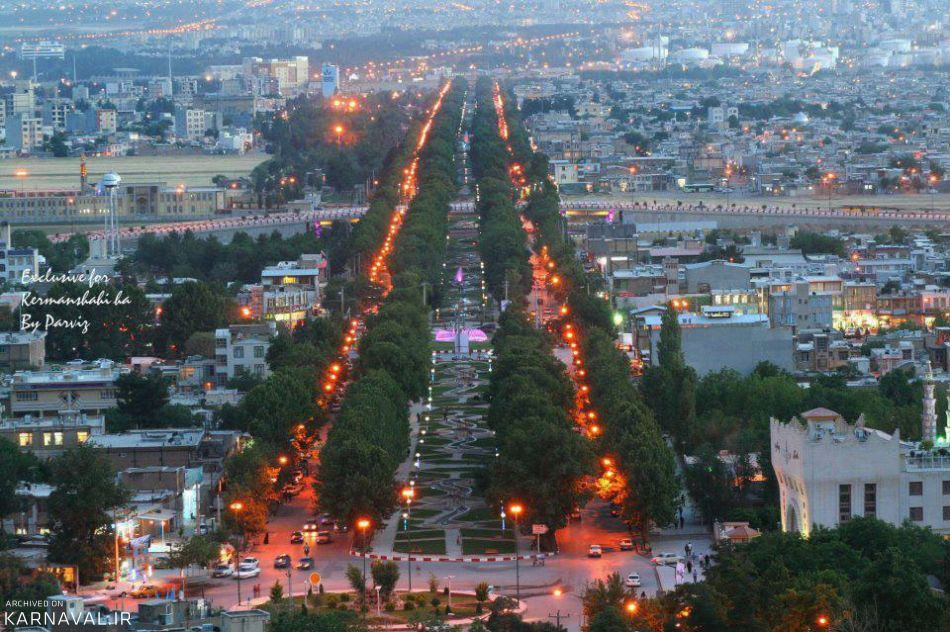
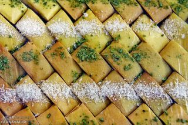
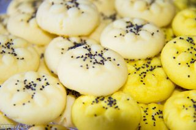
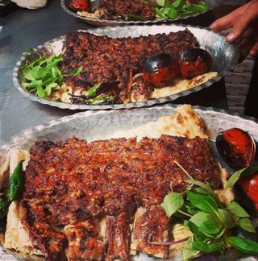

Taq Bostan

City View of Kermanshah
I am from Kermanshah in Iran
Ancient City of Kermanshah
Iran's ancient and historically significant cities include Kermanshah.
Nature of Kermanshah
The region's top destinations for nature tourism and excursions include Kermanshah's stunning natural surroundings, particularly the oak forests of Zagros, the city's Taq Bostan and Kohustan forest parks, and the area's well-known caverns and verdant plains.
Some of the greatest Iranian foods, treats, and mementos may be found in Kermanshah, for example:

Kak Sweets

Nan-e Berenji - Rice Crackers

Kebab
I'd like to invite you to visit my hometown; I'm sure you'll enjoy it.